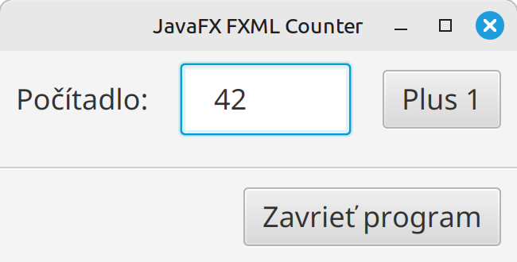

Teória 22: JavaFX - Udalosti¶
V JavaFX aplikáciách sa vyskytujú rôzne udalosti, anglicky eventy. Reprezentujú vstup od užívateľa alebo rôzne iné situácie, ktoré môžu počas behu programu nastať. V dnešnej časti si bližšie priblížime udalosti, ich tvorbu, zachytenie a ošetrenie.
JavaFX poskytuje moderný prístup k tvorbe a spracovaniu udalostí. Podobný prístup sa používa aj v iných programovacích jazykoch a frameworkoch. Ak pochopíte ako fungujú udalosti v JavaFX, tak vám to pomôže aj pri iných projektoch.
Udalosti¶
Udalosti nám hovoria o tom, že v našej aplikácii sa niečo stalo. Keď užívateľ klikne na tlačidlo, stlačí klávesu, pohne myšou, alebo uskutoční nejakú inú aktivitu, v aplikácii sa vyšlú udalosti - eventy. V rámci aplikácie potom máme možnosť na tieto udalosti zareagovať, poskytnúť užívateľovi odpoveď alebo vykonať inú akciu.
Udalosť - event - je objekt, dediaci z triedy javafx.event.Event. JavaFX poskytuje veľké množstvo tried, podľa toho, o aký typ udalosti ide. Ako príklad uvedieme triedy DragEvent, KeyEvent, MouseEvent a ScrollEvent. Okrem preddefinovaných tried si môžeme vytvoriť svoje vlastné triedy, dedením z triedy Event.
Každá udalosť obsahuje nasledovné informácie:
- Typ udalosti ktorá nastala, napr.
MouseEvent.MOUSE_CLICKED - Source (zdroj) - Kde sa práve v procese propagácie udalosti nachádzame
- Target (cieľ) - ktorého ovládacieho prvku alebo iného JavaFX objektu sa udalosť týka
Okrem toho môže udalosť obsahovať aj iné dáta, napr. pozíciu myši, ktorá klávesa bola stlačená, atď.
Trieda udalosti |
Typy udalosti | Detaily |
|---|---|---|
ActionEvent |
ACTION |
UI akcia (kliknutie na tlačidlo, výber menu, stlačenie enter v TextField). Signalizuje, že nastala nejaká akcia. |
MouseEvent |
MOUSE_CLICKED, MOUSE_PRESSED, MOUSE_RELEASED, MOUSE_MOVED, MOUSE_DRAGGED, MOUSE_ENTERED, MOUSE_EXITED |
Interakcia myšou. Obsahuje dodatočné informácie o polohe a tlačidlách: getX(), getButton(), getClickCount(), isShiftDown() |
KeyEvent |
KEY_PRESSED, KEY_RELEASED, KEY_TYPED |
Interakcia klávesnicou. Obsahuje informácie o stlačenej klávese a znaku: getCode(), getCharacter(), getText(), isControlDown() |
ScrollEvent |
SCROLL, SCROLL_STARTED, SCROLL_FINISHED |
Užívateľ scrolluje. |
TouchEvent |
TOUCH_PRESSED, TOUCH_MOVED, TOUCH_RELEASED |
Interakcia pomocou dotykovej obrazovky. Obsahuje pozíciu dotyku, počet dotykových bodov a iné. |
WindowEvent |
WINDOW_SHOWING, WINDOW_SHOWN, WINDOW_HIDING, WINDOW_HIDDEN, WINDOW_CLOSE_REQUEST |
Udalosti na úrovni života aplikácie, napríklad zobrazenie alebo zatvorenie okna. |
Cieľ udalosti¶
Každá udalosť má svoj cieľ, ktorý identifikuje, kde udalosť nastala, alebo na aký objekt chce udalosť poukázať. Týmto cieľom väčšinou býva nejaký ovládací prvok, napr. tlačidlo, checkbox, radio button, text field, a iné.
- Pre udalosti z klávesnice je cieľom ovládací prvok, ktorý je práve zvolený - anglicky focus
- Pre udalosti z myši ide o prvok, na ktorom sa práve nachádza kurzor myši
Podobne sa cieľ určí aj pri iných typoch udalostí.
Spracovanie udalosti¶
Spracovanie udalosti má 4 fázy:
- Nájdenie cieľa - podľa vyššie uvedených pravidiel
- Vytvorenie cesty ku komponentu v stromovej štruktúre scény - scene graphu
- Zachytávanie udalosti po ceste smerom od stage ku cieľu - capturing
- Ošetrenie udalosti po ceste od cieľa ku stage - tzv. vybublenie - bubbling
Po nájdení cieľa sa vytvorí cesta v stromovej štruktúre scény, podľa toho, kde sa cieľ nachádza. Cesta vedie od okna - stage objektu, až po cieľ. Ukážeme si to na príklade.
Majme aplikáciu s počítadlom s predchádzajúcej teórie, znázornenú na nasledovnom obrázku.

Stromová štruktúra scény pre túto aplikáciu vyzerá nasledovne (zahrnuli sme do nej aj stage a scénu):
flowchart TD
Stage:::bar -.-> Scene:::foo
Scene -.-> VBox
subgraph scene graph
VBox --> HBox1[HBox]
VBox --> Separator
VBox --> HBox2[HBox]
HBox1 --> Label
HBox1 --> TextField
HBox1 --> Button1[Button]
HBox2 --> Button2[Button]
end
classDef foo stroke:#a00
classDef bar stroke:#0a0Ak užívateľ klikne na tlačidlo "Plus 1", aplikácia vyšle udalosť ACTION, ktorej cieľom je ovládací prvok Button.
Cesta k udalosti bude nasledovná: Stage - Scene - VBox - HBox - Button. Po tejto ceste bude udalosť propagovaná, najprv smerom zľava doprava a potom naspať. Prvý smer sa volá zachytenie - capturing, a druhý smer vybublenie - bubbling.
Samotnú propagáciu udalosti - capturing a bubbling, si vysvetlíme v nasledujúcich kapitolách
Zachytávanie udalosti - capturing¶
Vo fáze zachytávania udalosti (event capturing phase) je udalosť odoslaná zo stage a prechádza cestou až k cieľu. V našom príklade by šlo o postupnosť Stage -> Scene -> VBox -> HBox -> Button.
Počas tejto fázy sa udalosť filtruje. Ak má niektorý uzol v ceste zaregistrovaný filter udalostí pre typ udalosti, ktorá nastala, tento filter sa vykoná. Po jeho dokončení sa udalosť odovzdá ďalšiemu uzlu nižšie v postupnosti. Ak pre daný uzol nie je zaregistrovaný žiadny filter, udalosť sa jednoducho odovzdá ďalšiemu uzlu v reťazci.
Filter nám umožňuje vykonať spoločnú akciu pre udalosti, ktoré smerujú k vnoreným (detským) ovládacím prvkom. Filtre sa typicky využívajú na logovanie a taktiež na blokovanie, keďže vo filtroch máme možnosť udalosť zastaviť, aby sa nikdy k cieľu nedostala. Viac o tom v kapitole o skonzumovaní udalosti.
V JavaFX je filter nejaká funkcia, ktorú zaregistrujeme pomocou metódy addEventFilter v komponente, cez ktorý udalosť prechádza, napr.
Vnútri filtra bude objekt udalosti mať source nastavný na komponentu resp. uzol, na ktorom sa filter nachádza (v našom príklade by šlo o HBox). Cieľ udalosti, target, sa nemení a je stále nastavený na cieľový objekt, v našom prípade Button
Ošetrenie udalosti - bubbling¶
Keď udalosť dosiahne cieľový uzol a všetky zaregistrované filtre ju spracujú, udalosť sa začne vracať späť po ceste v opačnom smere. V našom príklade by šlo o cestu Button -> HBox -> VBox -> Scene -> Stage.
V tejto fáze nastáva ošetrenie - handling. Ak má niektorý uzol po ceste zaregistrovaný handler udalostí pre typ udalosti, ktorá nastala, tento handler sa vykoná. Po jeho dokončení sa udalosť odovzdá ďalšiemu uzlu ďalej po ceste. Ak pre uzol nie je zaregistrovaný handler, udalosť sa presunie k ďalšiemu uzlu.
Vo väčšine prípadov sa registruje handler na cieľovom prvku, do ktorého udalosť smerovala. V JavaFX je handler nejaká funkcia, ktorú zaregistrujeme pomocou metódy addEventHandler v komponente, cez ktorý udalosť prechádza, napr.
plus1Button.addEventHandler(ActionEvent.ACTION, e -> {
System.out.println("Plus 1 tlačidlo stlačené");
});
Keďže je registrácia handlerov častou operáciou, JavaFX nám poskytuje pomocné metódy, ktoré nám registráciu uľahčia. Tieto metódy sa začínajú názvom setOn, napr. setOnMouseClicked, setOnKeyTyped atď. V našom príklade by sme namiesto addEventHandler mohli použiť nasledovný kód:
Podobne ako pri zachytávani - capturingu - tak aj pri ošetrení udalostí má handler možnosť propagáciu udalosti zastaviť, aby sa ďalej po ceste neposielala. Ako sa to robí si vysvetlíme v nasledujúcej kapitole.
Skonzumovanie udalosti - consuming¶
Udalosť môže byť skonzumovaná filtrom alebo handlerom v ktoromkoľvek bode cesty spracovania udalostí zavolaním metódy event.consume()
Táto metóda signalizuje, že spracovanie udalosti je dokončené a prechod udalosti cez reťazec spracovania sa ukončí.
Ak sa udalosť skonzumuje vo filtri udalostí, zabráni sa tomu, aby ju spracoval ktorýkoľvek ďalší uzol na ceste spracovania. Podobne ak sa udalosť skonzumuje v event handleri, zastaví sa pokračovanie spracovania udalosti ďalšími handlermi na ceste.
Treba tiež poznamenať, že predvolené handlery ovládacích prvkov JavaFX zvyčajne spotrebujú väčšinu vstupných udalostí. Napr. button po ošetrení udalosti ACTION automaticky udalosť skomzumuje. Podobne tak robí aj pre všetky udalosti myšou.
Udalosti a FXML¶
Ak používame FXML, teda deklaratívny spôsob tvorby JavaFX aplikácie, ošetrenie udalostí robíme nasledovne:
-
Handler funkciu vytvoríme v
Controllertriede aplikácie -
V Scene builder si označíme komponentu, pre ktorú chceme zaregistrovať handler, a v paneli "Code" vyberieme handler funkciu pre udalosť, ktorú chceme ošetriť
-
Vo výsledom FXML súbore sa nám potom toto zaregistrovanie zapíše ako atribút, napr.
onAction:<Button onAction="#plus1" style="-fx-font-size: 18px;" text="Plus 1" />
{kind=link}
Zhrnutie teórie¶
- JavaFX udalosti - eventy
- Keď užívateľ klikne na tlačidlo, stlačí klávesu, pohne myšou, alebo uskutoční nejakú inú aktivitu, v aplikácii sa vyšle udalosť - event.
- Udalosť je objekt dediaci z triedy
javafx.event.Event - Príklady tried:
DragEvent,KeyEvent,MouseEventaScrollEvent
- Každá udalosť obsahuje nasledovné informácie:
- Typ udalosti ktorá nastala, napr.
MouseEvent.MOUSE_CLICKED - Source (zdroj) - Kde sa práve v procese propagácie udalosti nachádzame
- Target (cieľ) - ktorého ovládacieho prvku alebo iného JavaFX objektu sa udalosť týka
- Typ udalosti ktorá nastala, napr.
- Spracovanie udalosti má 4 fázy
- Nájdenie cieľa
- Vytvorenie cesty ku komponentu v stromovej štruktúre scény - scene graphu
- Zachytávanie udalosti po ceste smerom od stage ku cieľu - capturing
- Ošetrenie udalosti po ceste od cieľa ku stage - tzv. vybublenie - bubbling
- Nájdenie cieľa a vytvorenie cesty
- Cieľ je ovládací prvok, napr. tlačidlo, kde udalosť nastala, alebo iný objekt objekt, na ktorý udalosť poukázuje.
- Pre udalosti z klávesnice je cieľom ovládací prvok, ktorý je práve zvolený - anglicky focus
- Pre udalosti z myši ide o prvok, na ktorom sa práve nachádza kurzor myši
- Po nájdení cieľa sa vytvorí cesta v stromovej štruktúre scény, ktorá vedie od okna - stage objektu, až po cieľ
- Zachytávanie udalosti - capturing
- Udalosť je odoslaná zo stage a prechádza cestou až k cieľu.
- Počas tejto fázy sa udalosť filtruje. Ak má niektorý uzol v ceste zaregistrovaný filter udalostí, tento filter sa vykoná.
- Filtre sa využívajú na logovanie a na blokovanie, keďže vo filtroch máme možnosť udalosť zastaviť, aby sa nikdy k cieľu nedostala.
- Filter je funkcia, ktorú zaregistrujeme pomocou metódy
addEventFilterv komponente, cez ktorú udalosť prechádza - Vnútri filtra bude source nastavný na komponentu resp. uzol, na ktorom sa filter nachádza. Cieľ sa nemení a je stále nastavený na cieľový objekt
- Ošetrenie udalosti - bubbling
- Keď udalosť dosiahne cieľový uzol a všetky zaregistrované filtre ju spracujú, udalosť sa začne vracať späť po ceste v opačnom smere.
- Ak má niektorý uzol počas bubblingu zaregistrovaný handler udalostí, tento handler sa vykoná.
- Väčšinou sa registruje handler na cieľovom prvku, do ktorého udalosť smerovala. Registrujeme pomocou metódy
addEventHandlerv komponente, cez ktorý udalosť prechádza - JavaFX poskytuje pomocné metódy na registráciu. Začínajú sa názvom
setOn, napr.setOnMouseClicked,setOnKeyTypedatď.
- Skonzumovanie udalosti - consuming
- Udalosť môže byť skonzumovaná filtrom alebo handlerom zavolaním metódy event.consume()
- Skonzumovanie spôsobí, že sa spracovanie udalosti ukončí predčasne.
- Skonzumovanie vo filtri zabráni, aby ju spracoval ktorýkoľvek ďalší uzol. Podobne skonzumovanie v event handleri zastaví pokračovanie spracovania ďalšími handlermi na ceste.
- Predvolené handlery ovládacích prvkov zvyčajne spotrebujú väčšinu vstupných udalostí. Napr. button po ošetrení udalosti ACTION automaticky udalosť skomzumuje. To isté aj pre všetky udalosti myšou.
- Udalosti a FXML
- Handler funkciu vytvoríme v Controller triede aplikácie
- V Scene builder označíme komponentu, pre ktorú chceme zaregistrovať handler. V paneli "Code" vyberieme funkciu pre udalosť, ktorú chceme ošetriť
- Vo výsledom FXML súbore sa nám potom toto zaregistrovanie zapíše ako atribút, napr.
onAction
Poznámky do zošita
V zošite je potrebné mať napísané aspoň tieto poznámky:
JavaFX udalosti - eventy
Udalosť - kliknutie myšou, stlačenie klávesy, zmena veľkosti okna, ...
Udalosť je objekt dediaci z triedy javafx.event.Event
Príklady tried: DragEvent, KeyEvent, MouseEvent a ScrollEvent
Každá udalosť obsahuje:
- Typ udalosti ktorá nastala, napr. MouseEvent.MOUSE_CLICKED
- Source (zdroj) - Kde sa práve v procese propagácie udalosti nachádzame
- Target (cieľ) - ktorého ovládacieho prvku alebo iného JavaFX objektu sa udalosť týka
Spracovanie udalosti má 4 fázy
- Nájdenie cieľa
- Vytvorenie cesty ku komponentu v stromovej štruktúre scény - scene graphu
- Zachytávanie udalosti po ceste smerom od stage ku cieľu - capturing
- Ošetrenie udalosti po ceste od cieľa ku stage - tzv. vybublenie - bubbling
Nájdenie cieľa a vytvorenie cesty
- Cieľ je ovládací prvok, napr. tlačidlo, kde udalosť nastala
- Udalosti z klávesnice majú cieľ ovládací prvok, ktorý je práve zvolený - anglicky focus
- Pre udalosti z myši ide o prvok, na ktorom sa práve nachádza kurzor myši
- Cesta je v stromovej štruktúre scény a vedie od okna - stage objektu, až po cieľ
Zachytávanie udalosti - capturing
- Udalosť je odoslaná zo stage a prechádza cestou až k cieľu.
- Počas toho sa udalosť filtruje. Ak má uzol v ceste zaregistrovaný filter, tak sa vykoná.
- Využitie na logovanie a blokovanie
- Filter funkciu, zaregistrujeme pomocou metódy addEventFilter v komponente,
cez ktorú udalosť prechádza
- Source v udalosti ukazuje na uzol, na ktorom sa filter nachádza.
- Cieľ sa nemení a je stále nastavený na cieľový objekt
Ošetrenie udalosti - bubbling
- Udalosť sa začne vracať späť po ceste v opačnom smere.
- Ak má uzol zaregistrovaný handler udalostí, tento handler sa vykoná.
- Väčšinou sa registruje handler na cieľovom prvku
- Registrujeme pomocou metódy addEventHandler
- Pomocné metódy na registráciu začínajú názvom setOn, napr. setOnMouseClicked, setOnKeyTyped
Skonzumovanie udalosti - consuming
- event.consume()
- Spracovanie udalosti sa ukončí predčasne.
- Predvolené handlery skozumujú väčšinu vstupných udalostí, hlavne tie myšou
Skúšanie a kontrola vedomostí
Na ďalšej hodine budeme kontrolovať nasledovné veci:
- Zapísané poznámky z hodiny vo vašom zošite
Okruhy otázok na test:
- Čo je v JavaFX udalosť - event. Čo obsahuje
- Základné typy udalostí
- Fázy spracovania udalosti
- Nájdenie cieľa a vytvorenie cesty
- Zachytávanie udalosti - capturing
- Ošetrenie udalosti - bubbling
- Skonzumovanie udalosti - consuming